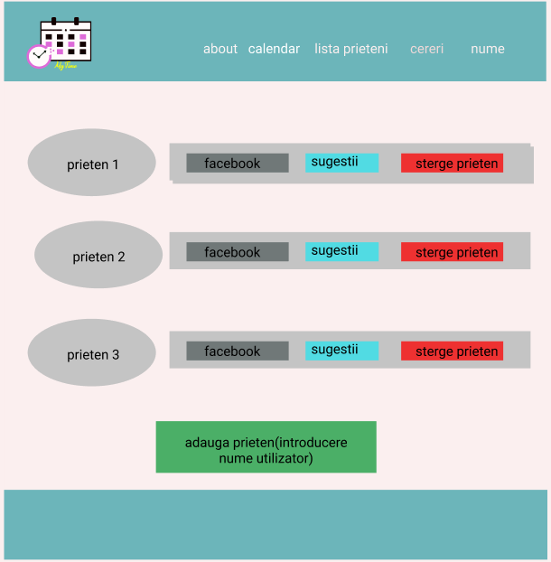
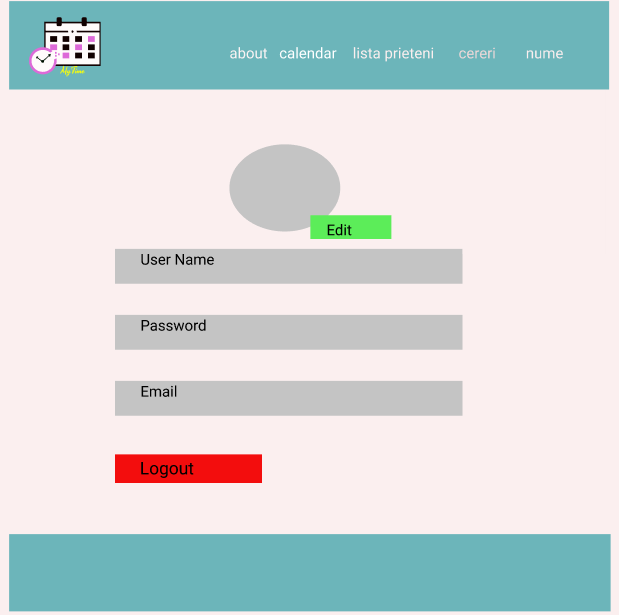

The purpose of this website is to allow you to make appointments, plan your busy schedule and to be informed about upcoming meetings.You can see every friend's schedule in one place.
This document was written in order to help people understand the purpose of this website, how it was made, what functionalities it has and what services it provides.
This user interface was made with HTML, CSS and JavaScript.
The logos were made in Figma.
Color holds power. It can impact our moods, emotions, and behaviors.We used blue as a primary color in the app because it is a color that has long been associated with royalty, art, military, business, and nature.
The primary color is the most common favorite color across cultures, genders, and ages and we used it also because we want to make the customer feel comfortable and at peace right away. Another reason is because blue seems particularly popular in tech and digital applications.
For the secondary color we choose gray to provide more ways to accent and distinguish our app. In color psychology, gray represents neutrality and balance. Its color meaning likely comes from being the shade between white and black. Gray and blue create a really versatile combo and will highlight the logo.
The colors we apply to specific buttons and parts of our page can change the way a customer reacts to our app.
Some of the functions this website provides are:
Here we will have the back-end functionalities.
In this section, we cover exactly what each page contains, what it allows the user to do and how it can be used.
The login - page is divided in two main sides,the left side contains the website's logo, and a shortcut for register page in order to facilitate the creation of an account in case it does not have one.This section offers a more obvious contrast to to make it easier to see.
In the right side are two fields required, email and password. After completing the fields to login, the login button must be clicked.
To make the application even easier to use, we added the sign in with google button that has different background color to highlight it.
The register page contains only the required fields for a new account,signin and home button
In order to make an account, the user must provide their first and last name, an email address, a password that has at least 7 characters and a number.
Before the register button there is a link to the terms & conditions page so before signing up, the user should read the terms and the policy of our website in order to get familiarized with the data we collect, what they aren't allowed to do on our website and so on.
On this page, anyone who accesses the site can see information about the application and can watch a video showing the features of the application and how it can be used.
Through the navbar of this page, a new user will be able to access the Signup page to create an account, and an existing user will be able to access the Login page to log in to his current account.
After creating an account, each user will be able to see how many tasks he has completed that day and how many friends he has in the application.
Also, through the navbar buttons the user will be able to access the other pages in the application
This page allows users to see the calendar in weekday format that shows the hours for everyday in the week. They can change the shown weekday by using the left and right arrows in the upper left corner of the page, or they can use the date picker provided in the upper center above the shown week that has a title with the month and the specific dates that fit the current week.
The calendar page contains a “today” button in the upper right corner of the page that will be activated only if the user wants to go back to the week that contains the current day, if he moved to another week.
The user can add an event by selecting directly the hours on the calendar or using the “Create Event” button. When the user wants to add an event he will specify a title, a description, choose a color and time frame for that event. The user can also select, update or delete an event.
Also, the user will also see events from Google Calendar as well, the events being imported automatically. The shared events among users will be automatically added on every users calendar that will participate in that event.
This page shows all the friends in the application. Profile photography is used for easier identification.
At the top of this page is the nav bar component where the user can search for a friend by name.To highlight this component we used a color that provides contrast. Also in this component the user can see friends requests.
This page provides several features such as delete a friend, see facebook profile and suggestions when and where you can meet.The colors of the buttons are different to highlight their action.
In this page, the user can mostly get acquainted with the purpose of this website (About us button), our terms and conditions (About terms & conditions button) and our policy (About our policy button).
Just like on the other pages, this page also has a footer with the same functionalities as the ones on the other pages. The logo and the avatar photo will also redirect the user to the user settings page and the home button will redirect them to the home page.
On this page, the user can see the possible encounters that he can have with a certain friend, automatically generated by the application.
The purpose, place and time of each meeting are specified and if the user agrees with the suggestion, he can also send a request to the friend whose photo is displayed at the bottom of the page.
Possible appointments will be stored in pdf files that the user will be able to save by pressing the download button.
This page is a collection of settings and information associated with a user. It contains critical information that is used to identify an individual, such as their name, age, email, portrait photograph
All information can be edited using the edit button that appears centrally to be visible. By pressing the edit button, the fields are transformed into editable fields.After editing, the user has the option to save or not the changes. The two buttons have strong shades to mark the role of their action.
This page also contains the log out button
The Admin page gives you access to user details and events.
The admin has a special account with a profile that will be verified at log in.
This page contains the user's profile pictures and for every user is a button for seeing the details, selecting an event, deleting an event and deleting the user.
HTML
CSS
JavaScript
Node.js
PL/SQL